:::
继上次挂条仅存在一小时就被举报封禁后，涉事人5799的小号@还我命来5799发布了反挂条，其主张主要有四：
并将原挂条对对方一系列侵害行为的陈述，称为“抹黑”。
是【事实】还是【抹黑】？
谁才是【加害者】？是谁在【传播他人隐私】？是谁在【组团进行网络暴力】？谁在【连坐】？谁是真的在【污蔑】？我相信群众的目光是雪亮的。此文能做的，只有将大家所承受的一切都记录在案，并呈递至诸位眼前。
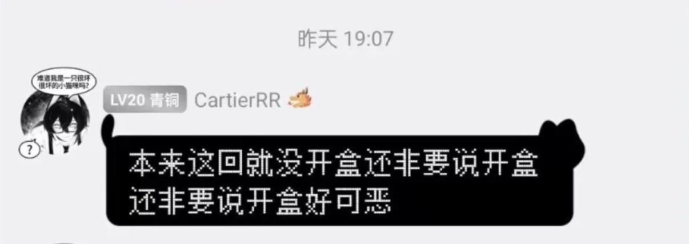
本次人肉信息传播者360在qq群内发言：“本来这回就没开盒”。很好，那就来盘点一下杨美娟之前的开盒战绩。
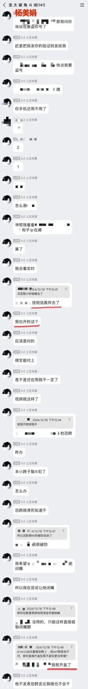
然而，杨美娟真的只开盒恐跨人士吗？
杨美娟（早年微博昵称为“你就是那海市蜃楼”）早在2024年9月中旬，就在lxx圈已卷入过一场开盒纷争。
杨美娟称类圈一位未成年人“反跨反酷”并教唆人将其开盒；随后， 从未持过反跨反酷立场 的苦主 赛博幽灵（小号wiring_cook) ，仅因为发表 不支持开盒wcn 意见，就被连坐开盒。
杨美娟不仅恐吓苦主 赛博幽灵本人 ，还继续恐吓转发区持相同观点的网友。
而被 连坐开盒威胁 、 被扒现生信息、受短信轰炸骚扰 的苦主，正是杨美娟口口声声说要保护的 “性少数” 。
（下附图，已被迫销号）
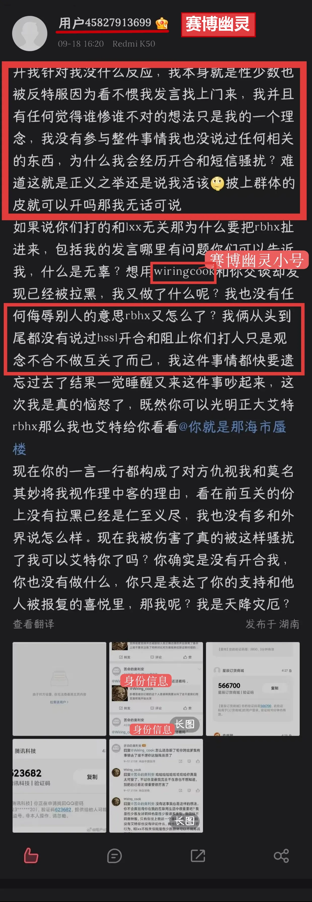
（下图打码部分为涉及受害者身份的私密信息,是小号艾特+QQ号+全名）
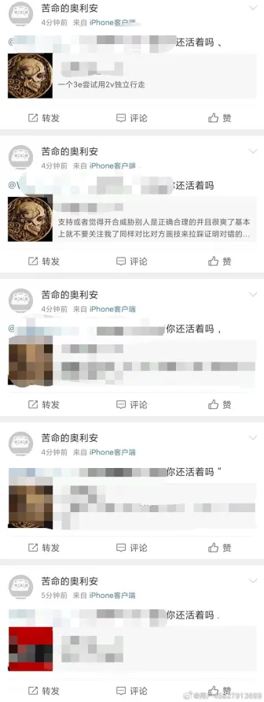
大家都知道杨美娟是开盒人，而杨美娟对此的回应是：开盒人不是我，是我 朋友 。我们已经找到了这位“ 朋友” ，正是在杨美娟hssl时期在其微博留过言的 芒果椰奶冻 。
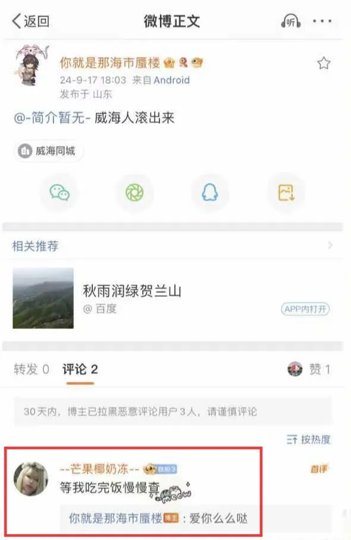
这位被杨美娟召唤出来的“前笔仙”芒果椰奶冻（小号@苦命的奥利安）是圈外人士，杨美娟教唆并指使芒果椰奶冻开盒 反terf友酷 赛博幽灵
面对受害者的控诉，杨美娟的回应是： 立即与芒果椰奶冻切割 。杨美娟利用芒果椰奶冻其不稳定的精神状态、开盒技术、短信轰炸渠道达到ta宣泄暴力，封缄异见的目的后，再立即抛弃这个工具， 假装自己与此事无关 。
不仅如此，ymj在拱火成功后，面对逐渐不可控的损害后果，竟劝诫受害者向芒果椰奶冻滑跪认错 。
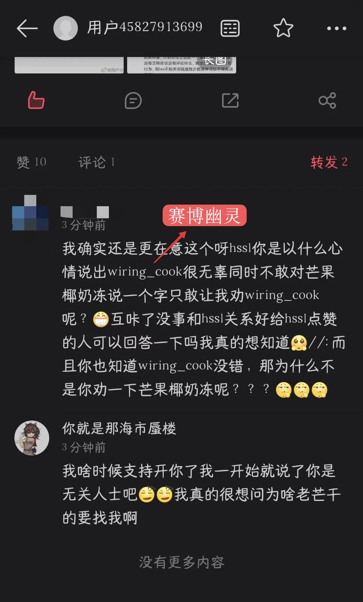
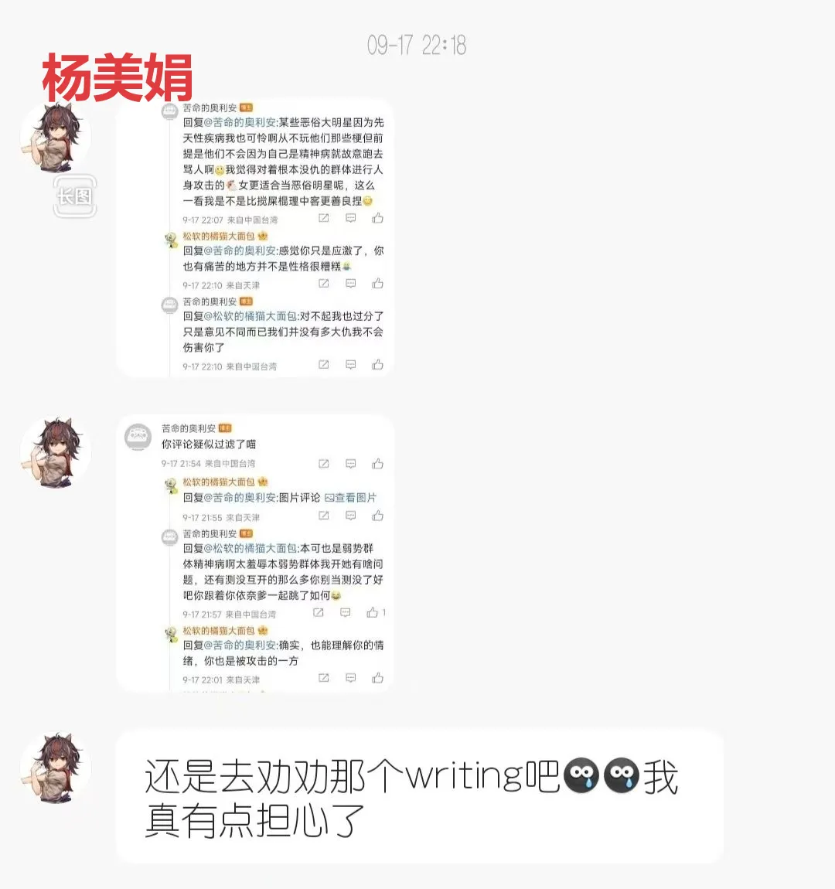
海市蜃楼切割了负责开盒的 芒果椰奶冻 并转生新号 杨美娟的大娟巴 后，杨美娟发现 盒武器 威慑不仅可以让异己者全部 闭嘴 ，还能通过 连坐胁迫其互关、亲友 等方式，逼被ta锁定为施暴对象的人出面承受ta的攻击性。
于是在本次事件 中，ta又开始营造开盒的恐怖氛围，甚至直接发表连坐开盒言论（下附图）。
（互关1）
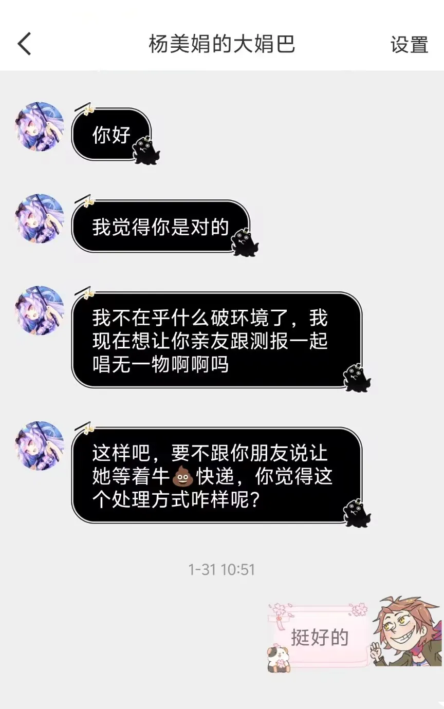
（互关2）
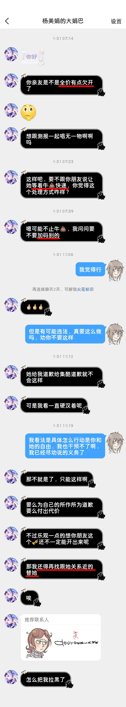
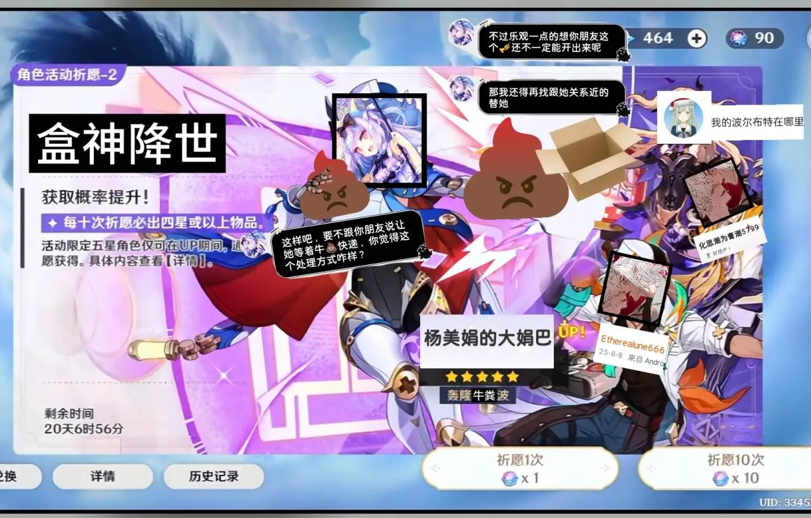
受害者之一在微博的控诉，由受害者们公示事件中的意见不统一（下图）可以看出，5799在反挂条中的内容，只是为了将受害者们 按观点进行分割 （甚至还反咬一口，将ta们投射为和自己一样的“小团体”）。
ta刻意引导大众焦点， 模糊己方小团体冲进受害者博客进行网暴，默许杨美娟人肉搜索性少数路人 的劣行 ，反倒扯酷儿立场作为排除异己，攻击受害者们的手段 ！
正如受害者在第三点中所说：ta们凭什么代表全体酷儿出征？
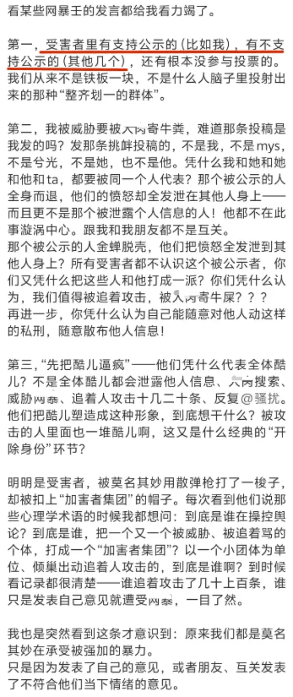
由此可见，无论各位是什么身份，只要和小团体的敌人有关系，就有可能被连坐开盒。
lxx圈已经出现了把异己都打成反酷，并进行开盒与辱骂的集体，其中 杨美娟 、 360 等人已有多次 威胁开盒 、 教唆开盒 与 直接开盒 的行为， 5799 与 666 两人 在群内默许360的开盒威胁言论，在已知杨美娟有开盒行为之后仍然进行 包庇 、 声援 。
这样的行为早已与5799和杨美娟宣称的“为酷儿反击”，“保护酷儿”早已 相去甚远 。
事实是，ta为了享受拿起道德大棒无限施加暴力的快感，已经伤害了不止一个酷儿。与ta意见不同的酷儿，不仅会遭受网络暴力、开盒人肉等真实可感的攻击，还都会被ta及ta的小团体瞬间归为女性，并给予“母zhu”等绰号，彻底misgender，甚至被指出，也只是一句轻飘飘的“对不起”。
而其ta受害人甚至没有misgender 5799（已向5799本人确认过，5799无所谓代词使用）， 加害者们却是冲进他人主页转发区进行恶意揣测、攻击 。可见这个小团体对misgender的“抵制”、对代词称呼的要求（如：对被说过可以使用任意代词的人，要求对方在未经说明的情况下，猜出对方希望被不定时切换不同代词称呼，并猜出各个代词的切换频率），会随着ta们的心情随意改变。
可见，在ta们眼中，“尊重”酷儿，不是根植内心的信念，而是ta们打击异己、建立话语霸权的一把5器。
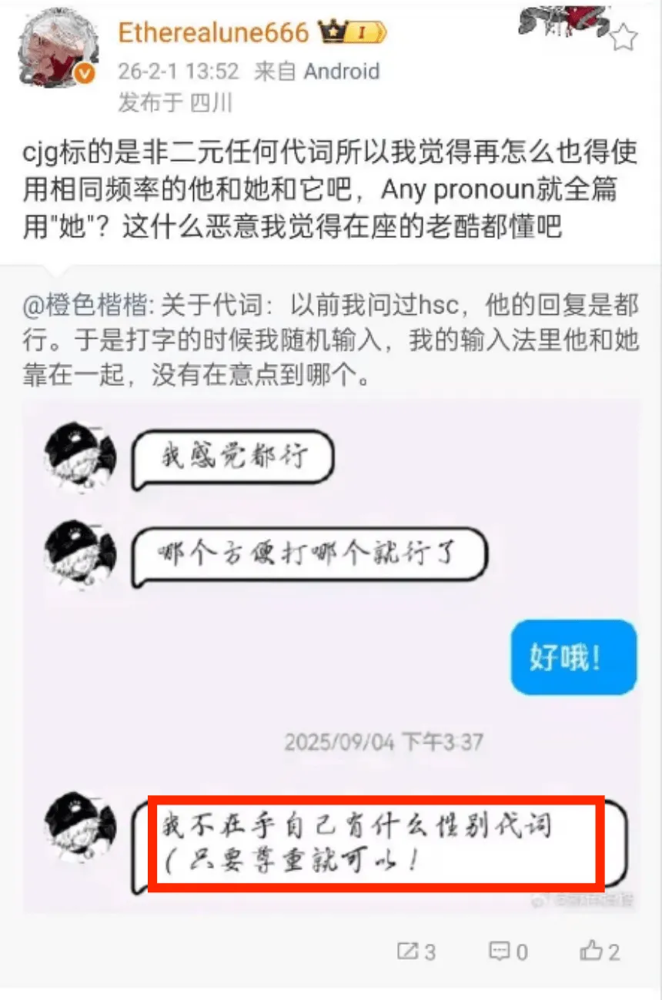
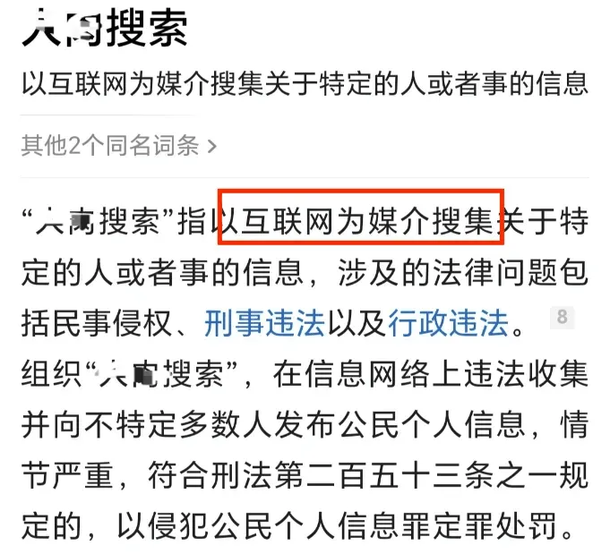
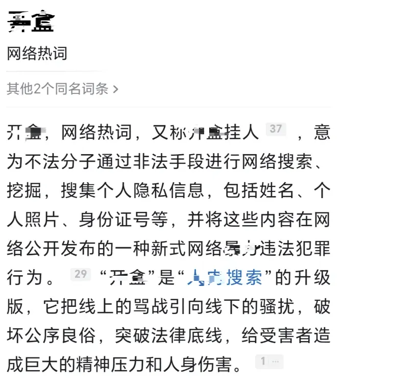
杨美娟和360人肉开盒并传播了被威胁的异见者及毫无关系的第三人的个人信息，包括姓名，QQ号及学校。群里有人发表“圣地巡礼”的言论，暗示群友线下骚扰。
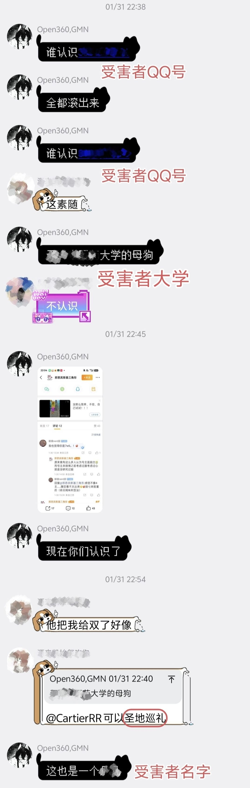
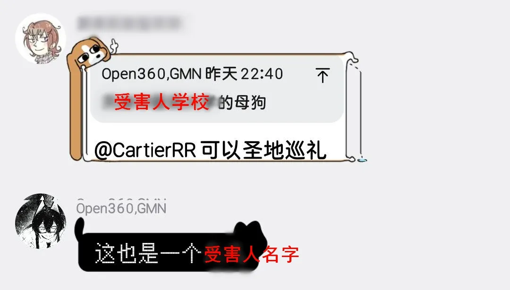
而杨美娟的大娟巴 对自己的开盒行为进行辩解的方式——就是将受害者隐私信息在自己微博主页再次无码公开传播。
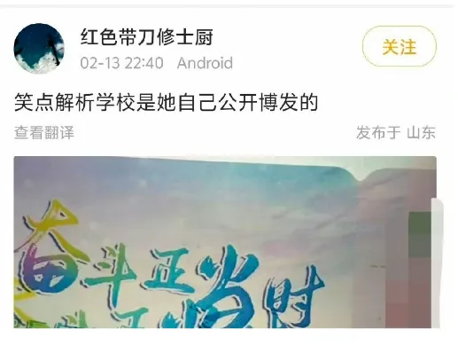
并和360在120人QQ群中继续肆意 发布 、 辱骂 。在受害者微博主页 地毯式搜寻个人信息 后，将受害者半年多前偶然进行的生活分享诽谤并辱骂其为“ 露音癖 ”、“ 故意天天晒个人信息 ”；对于挖掘出的个人信息，在群内进行针对性的 攻击 、 辱骂 。
更有甚者，明知杨美娟有人肉搜索与二次传播受害者私人信息的行为后仍为杨美娟写下洗白开盒行为的博客。（另：此博客格式与5799反瓜条博客格式相同）
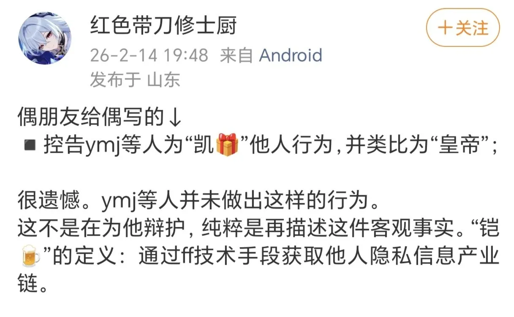
受害者完全与争议中心无关联，却无辜承受被开盒人肉、曝光个人信息的霸凌，事后还要被施暴者PUA（扭曲成受害者的错）、继续传播个人信息，这对受害者造成的伤害不可估量。
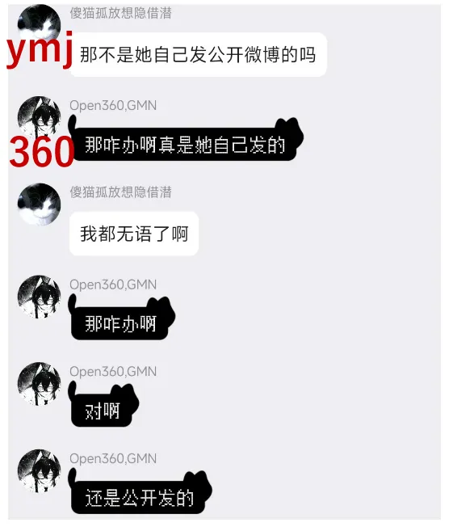
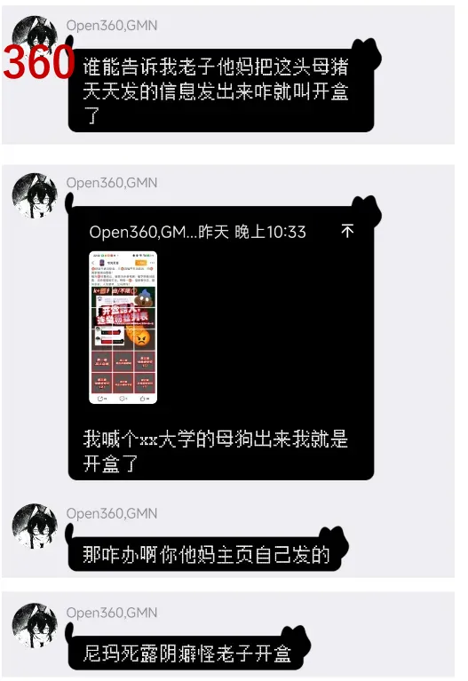
此后又人肉了另一个人，并将这两人连带社交帐号及个人隐私信息，均恶意P图发布在120人QQ群内。
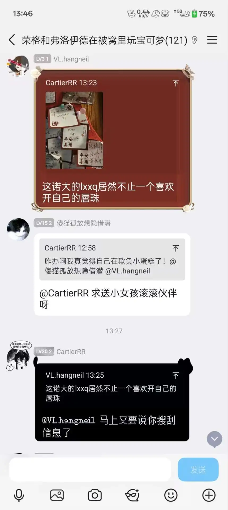
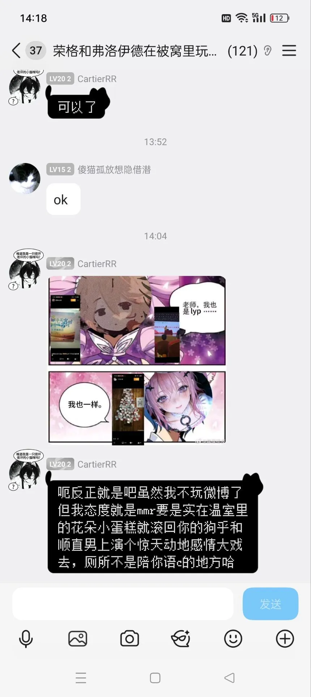
杨美娟和360在无辜受害者的信息未主动授权给任何人的前提下，动员团体在其微博主页进行 地毯式搜集 ，扒下来 公开发布 、 羞辱 、 人身攻击 ，完全符合 开盒 、 人肉搜索 的定义。这是完全的 违法行为 、 暴力行为 。
如果连这个也看不懂，还可以请出杨美娟大帝的名言：不懂去问deepseek。
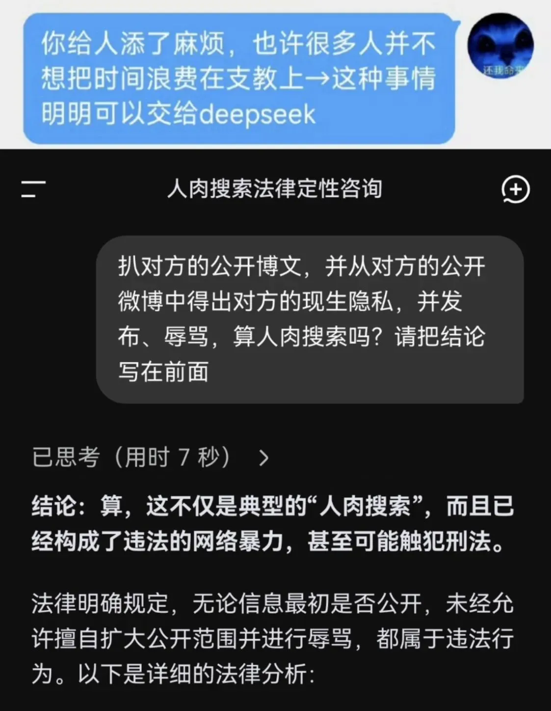
杨美娟向异见者的互关发出针对异见者的开盒威胁及连坐他人的威胁后，5799与666表面上在微博卖惨 ，声称自己与盒事件无关，声称不存在“小团体”：
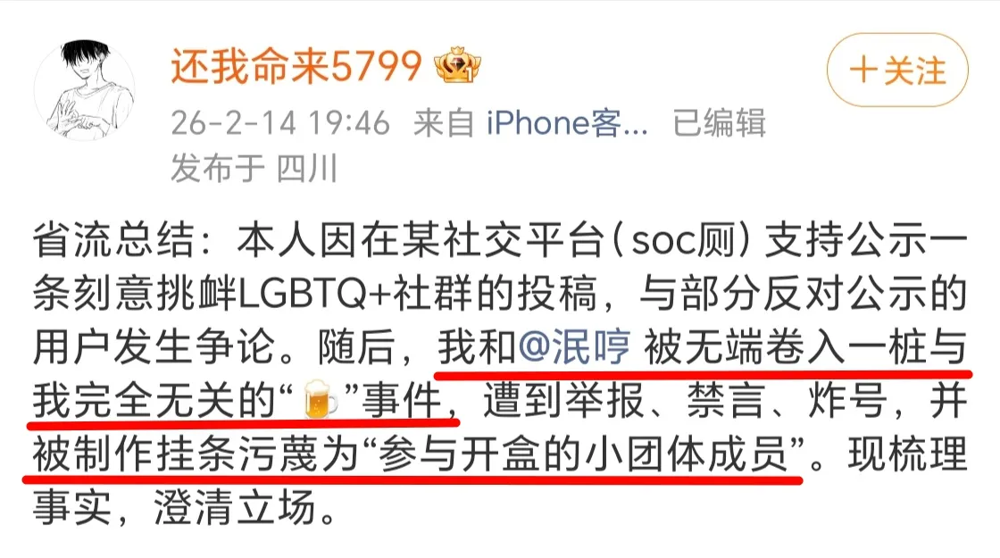
实则在群内观看、响应“开团”。
（EthV=etln=etln666，cjg=陈建国=5799）
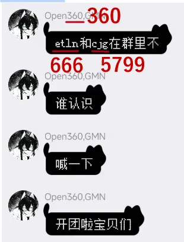
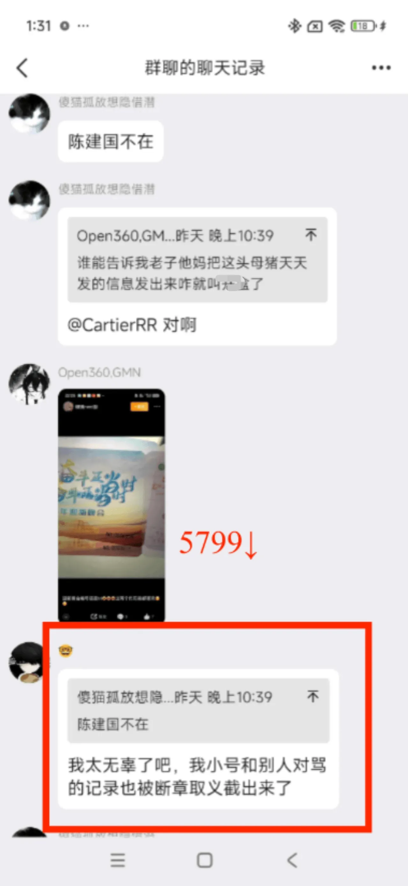
并在微博散布 受害者有罪论 的观点，试图 为施暴行为正名 ，一边逃避责任，一边声称自己“事出有因”，无比虚伪！
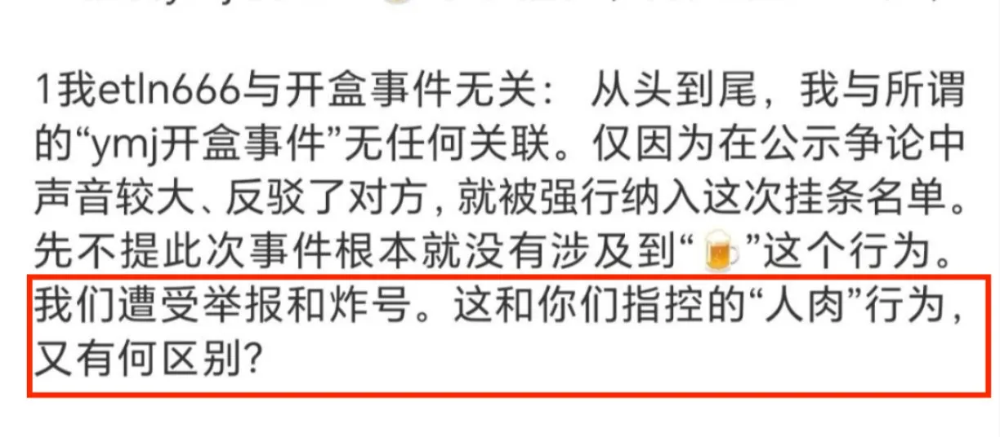
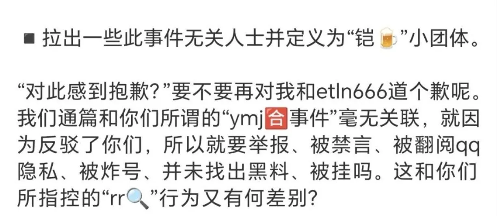
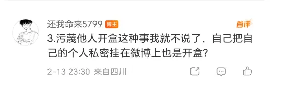
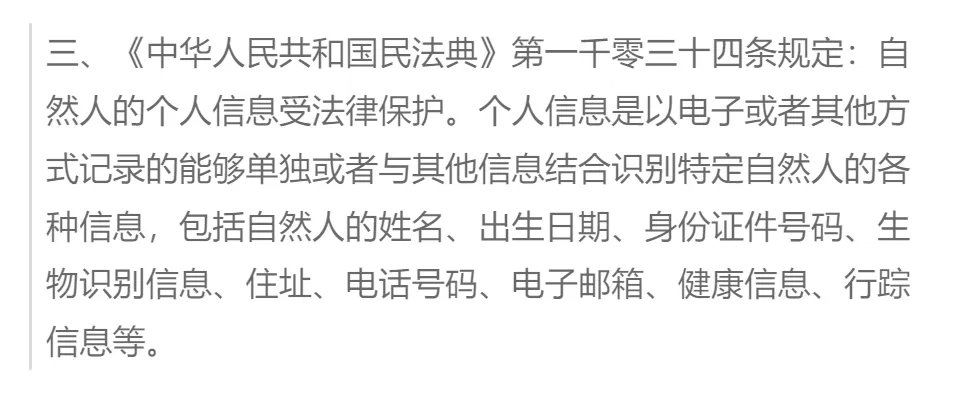
5799扭曲事实， 模糊 杨美娟的大娟巴与360 威胁开盒、鼓动线下骚扰 、 恶意人肉搜索受害者yin私信息 并 未经允许发布和传播 的暴行，以及杨美娟的大娟巴早已有之的开盒前科（上文已介绍）的事实， 将全部责任推在 一个将微博个人主页当作自留地、记录生活的 无辜受害者 身上。
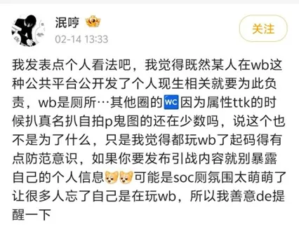
666的做法，是典型的 以偏概全谬误 ：将少数极端群体的行为无限放大，污名化整个微博平台，以此替施暴者的违法行径开脱。ta们把网暴、“开盒”包装成一种“ 寻常事件 ”，试图用“ 厕所文化 ”这块遮羞布，掩盖赤裸裸的 侵权行为 ，甚至 反过来规训受害者 。
所谓 “玩微博要有防范意识“，则是经典 受害者有罪论 。666试图以平台属性转嫁责任，用受害者的“ 防范意识不足 ” 合理化 施暴者开盒网暴的违法暴力行为 。殊不知在任何平台，未经允许发布他人个人信息都是法律明确禁止的侵权行为， 并可能面临民事、行政乃至刑事上的多重法律责任 。
这种论调不仅是在为施暴者开脱，更是在纵容暴力。它试图使受害者自我审查，让整个社区陷入恐惧，最终只会让恶势力更加肆无忌惮。我们真正需要的，是 谴责施暴者 ！
综上所述，666，5799和杨美娟（hssl）是一伙的，ta们组成了一个关系网，说明lxx圈有一个 把异己都打成反酷并辱骂和盒威胁 的黑恶势力，666、5799 也投诚了。
然而，就在ta们与杨美娟、360在群内围观“开团”、共谋攻击的同时，5799却用小号发布所谓的 “反挂条” ，试图以 “切割” 洗白自己。这种一边在私域默契配合，一边在公域撇清关系的操作，无非是想给自己立一个 “清白无辜” 的牌坊。
但问题是： 如果真与开盒团体无关，为何跳出来帮加害者说话、pua受害者？
如果真反对网暴，为何在受害者被围攻时袖手旁观，甚至推波助澜？
所谓的“反挂”，究竟是洗清冤屈，还是为了堵住悠悠之口而避重就轻、狗急跳墙？
诸位，ta们在微博用各种言论追着攻击过多少人？自己多行不义，还要污蔑挂条制作者举报ta们“禁言”、“炸号”。与其虚空索敌，不如好好反思自己是不是惹了太多人，被人趁乱执行。
显然，ta们“为酷儿这个弱势群体出征”也只是为了自己陷入虚幻的“正义"，实则仍会借用弱势群体的特征攻击ta们，本质与用酷儿的生理特征攻击酷儿的顺直反terf无异。这样的人与行为，难道不会对酷儿们的整体形象造成抹黑吗？
:::info
这些行为早已越过了合理维权的底线，不仅违背法律，更与正义背道而驰。
我们呼吁所有关心酷儿与LGBTQ+群体权益的人，对此保持清醒认识——以正义之名行违法之实，不仅无助于争取平等，反而伤害了群体的公信力与社会认同。
真正的进步，始终建立在尊重法律、珍视公义的基础之上。
正所谓多行不义必自毙。在此之前，早已有无数受害者：ta们有的遭受侮辱谩骂，有的被骚扰至退网，还有的因诽谤而名誉严重受损，却无力反抗。
当前呈现出的证据，不过是这些人恶行的冰山一角。本次被威胁的人们并非第一批受害者，只希望经此一役，能让所有人看清事实。
:::
小团体利用人肉搜索手段找出受害者私密信息，在120人的群聊中追加辱骂数十条，渲染恐怖范围，选择无辜人士（然而这些人也是酷儿）打成反酷制造对立，逼迫站队，甚至私下威胁。
酷儿友好者和探索酷儿理论的行为都被打成反酷制造对立，ta们逼迫站队，连坐探索酷儿理论博客的评论区用户们（并在其中借机发泄私人恩怨）。
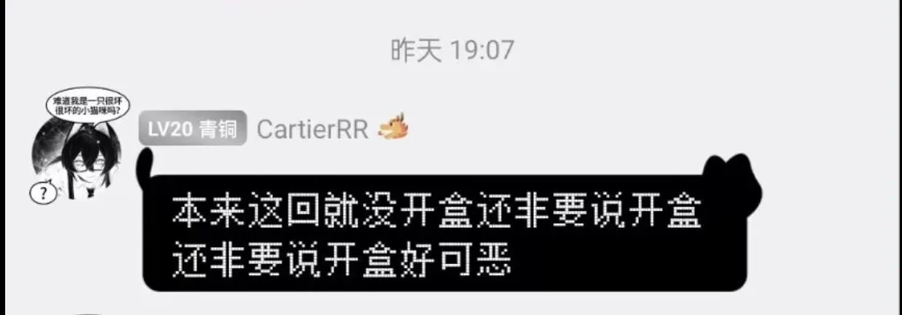
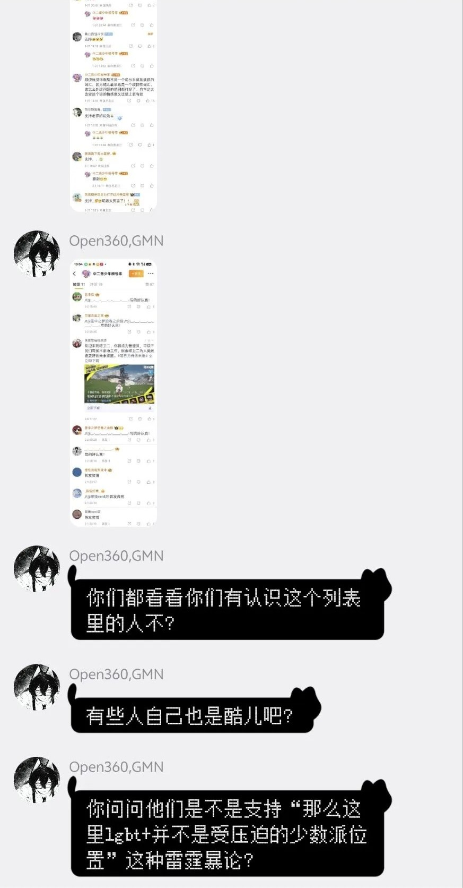


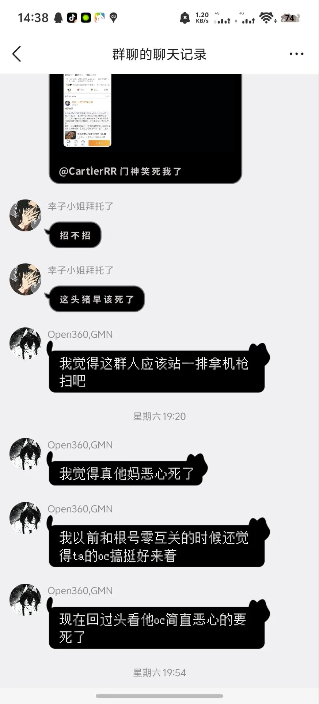
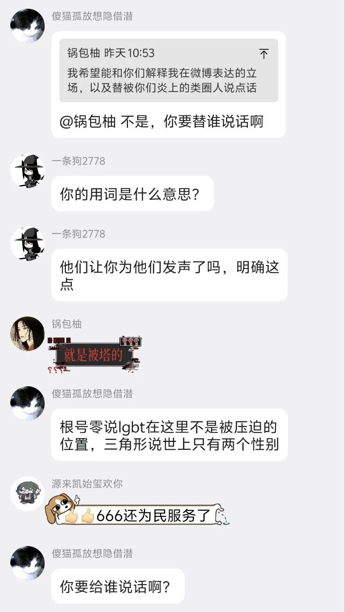
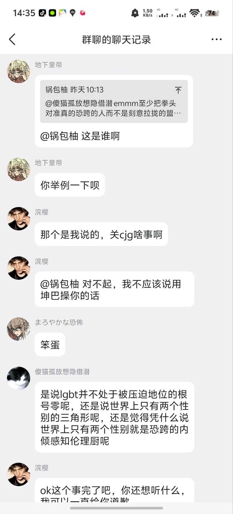
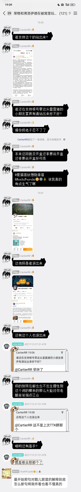
你们总说自己是受害者，反击是应该的，然后无底线骚扰始作俑者、始作俑者亲友甚至无关人员。
做出这种事情的人没有资格指责观众断章取义，因为真正的受害者不会冲进别人主页规模性地大骂，出口成脏，侮辱人格，撒泼打滚。
你们就是加害者，无数次事态升级的元凶，无数次网暴行为的推手。